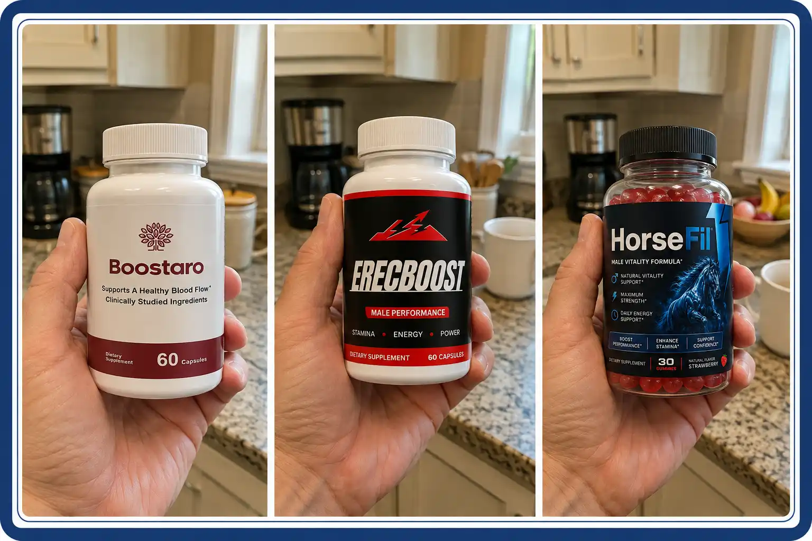
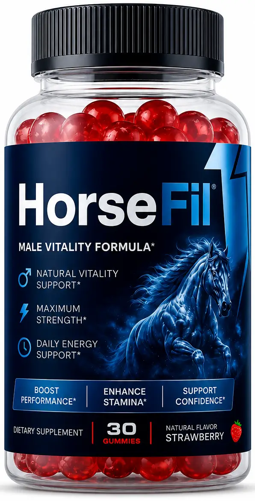
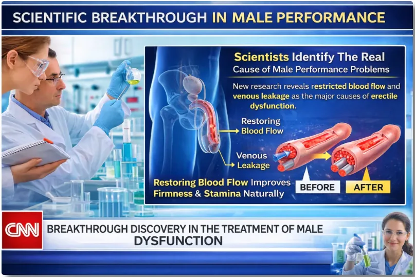
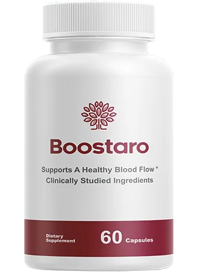
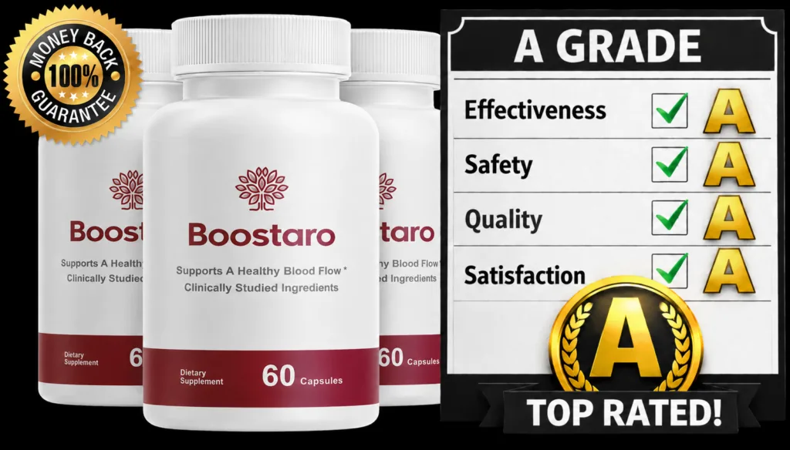
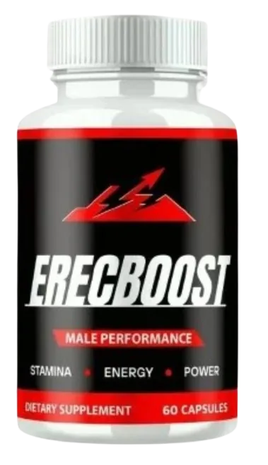
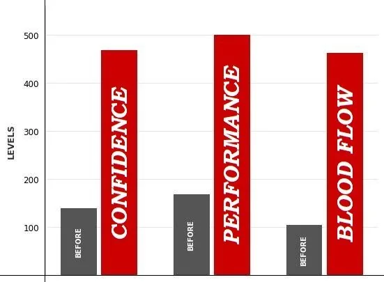

Only One Showed Measurable Improvements in Performance — This Formula Delivered Consistent, Noticeable Results for Strength, Stamina, and Reliability.

In the crowded world of еrесtіlе dуѕfunсtіоn (ЕD) supplements, bold promises are everywhere.
Websites talk about “instant results,” “maximum size,” and “testosterone breakthroughs.” But when it comes to еrесtіоn quality, stamina, and reliability, marketing claims mean nothing without real-world results.

HorseFil is one of the most talked-about names right now. It’s marketed as a natural solution to improve performance, boost energy, and support male vitality. On paper, the formula sounds promising — combining well-known ingredients like Ashwagandha, Tribulus and Longjack.
But behind the glossy marketing, there’s an uncomfortable truth that needs addressing: the real experiences of users are frequently overlooked.
Across forums and independent reviews, many men report underwhelming results, with some seeing little to no difference after weeks of consistent use. Others question the actual strength of the formula and whether it delivers the benefits it claims.
And while HorseFil might work for a small percentage, the lack of transparent user data, clinical testing, and consistency in results raises important questions.
In this review, we’ll focus on the supplements that users are genuinely standing behind — backed by authentic feedback, consistent results, and ingredient transparency —
not marketing buzzwords — so you can make a smarter, more confident decision.
You’ll discover exactly why HorseFil, while popular and well-promoted, didn’t meet the standards required to earn our #1 position on the list.
Scientists Identify the Real Cause of Male Performance Problems

Recent vascular research has revealed that most cases of еrесtіlе dуѕfunсtіоn are linked to restricted blood flow or venous leakage inside the penile arteries.
When circulation is limited, the corpus cavernosum cannot expand properly, making it difficult to achieve or maintain a firm еrесtіоn.
By restoring healthy blood flow and improving vascular function, the еrесtіlе tissue can expand naturally — leading to stronger firmness, better stamina, and longer-lasting performance.
Why Blood Flow — Not Testosterone — Is the Real Key to Stronger ЕRЕСТIОΝЅ
Many men believe that low testosterone is the main reason for еrесtіоn problems.
However, research shows that for most men over 35, the real issue is often declining nitric oxide levels and reduced vascular health.
An еrесtіоn is primarily a circulatory event.
When nitric oxide levels drop, blood vessels struggle to expand, limiting the amount of blood that can enter the еrесtіlе chambers.
And without proper blood flow, firmness and stamina naturally decline — regardless of testosterone levels.
This is why modern male performance formulas focus on supporting:
- Nitric oxide production
- Healthy endothelial function
- Elastic and responsive blood vessels
By improving circulation and vascular health, these nutrients help restore the body’s natural ability to achieve stronger and longer-lasting еrесtіоnѕ.
Understanding this difference is essential when choosing the right male performance supplement.
To determine the best Male Performance Enhancement Supplements of 2026, we evaluated each product based on:
- Ingredient Dosing & Clinical Relevance: Are the ingredients included in amounts supported by research for circulation and performance?
- Mechanism of Action: Does the formula support nitric oxide production and vascular health, or rely only on generic herbal blends?
- User-Reported Consistency: Do real users report steady, repeatable improvements?
- Safety & Transparency: Clear labeling, no hidden proprietary blends, no unnecessary additives.
- Value & Guarantee: Fair pricing and a legitimate refund policy.
Top 3 Supplements for Male Performance of 2026
Below, we reveal our rankings and dive into detailed reviews of the 3 game-changing products we tested, starting with our #1 pick. If you’re serious about reclaiming your energy, vitality, and peak performance, these supplements can deliver — but choosing the right one is what separates winners from everyone else.
Here is a side-by-side comparison of the three male performance formulas people are searching for most across the U.S. today, which provides a summary of our research and analysis:
| Product | Grade | Targets Blood Flow | Guarantee | Verdict |
|---|---|---|---|---|
| #1 Boostaro | A+ | ✓ | 60 days | Recommended |
| #2 HorseFil | A- | ✕ | Limited | With Reservations |
| #3 ErecBoost | B- | ✕ | Limited | Not Recommended |
Scroll the table sideways on mobile. Full reviews below.

Boostaro
by Boost
1,973
Votes Total Ranking
A+
Overall Grade

Pros
- Laboratory tested — 100% pure ingredients with no binders or fillers
- After 30 days of daily use, study participants reported surprising results, including increased testosterone levels, size, and performance.
- Contains must-have ingredients to optimize blood vessel health, enhance circulation, and naturally boost male performance.
- Molecular formula similar to others on the market without the side effects.
- Vegan, non-GMO, and gluten-free
- Made in the USA in an FDA Approved facility
- 60-Day Money Back Guarantee — zero risk
Cons
- Anyone under the age of 18 not recommended
- Only available on the official website, not in physical stores
- Due to high demand, the product is in limited stock on the website
Bottom Line: Recommended
Boostaro® Is the #1 Male Performance Supplement of 2026
Boostaro® is quickly becoming the top choice among men’s supplements thanks to its cutting-edge, clinically backed formula. This powerful blend is designed to restore blood vessel health, enhance circulation, and naturally boost male performance, energy, and confidence.
Clinical studies show that Boostaro’s formula can significantly improve еrесtіlе funсtіоn, stamina, and vitality in as little as 7 to 10 days.
In one groundbreaking trial, men taking Boostaro’s active ingredients reported dramatic improvements in blood flow, sexual performance, and physical endurance — without the side effects commonly seen in synthetic alternatives.
In contrast, men who relied on standard ЕD medications continued to struggle with fatigue, low libido, and inconsistent results.
Boostaro also uses an all-natural nutrient delivery system, maximizing absorption for faster, more noticeable results. This innovation has caught the attention of top health professionals and longevity experts, driving a wave of trust and enthusiasm around the product.

That’s why Boostaro comes with a 100% money-back guarantee for a full 60 days.
Packed with potent, research-backed ingredients like L-Citrulline, Pine Bark Extract, and CoQ10, Boostaro is scientifically engineered to safely restore male energy and performance — without relying on chemicals or risky drugs.
A 2026 Consumer Survey Revealed Remarkable Results:
- 94% customer satisfaction
- 89% said Boostaro was the best male performance supplement they’ve ever used
- Over 88% reported noticeable improvements in energy, firmness, and stamina within the first 30 days
Combining science, premium natural ingredients, and unmatched customer satisfaction, Boostaro® stands out as the most trusted men’s health supplement of 2026.
Boostaro is available exclusively on the Official Website. Other retail stores do not sell the original product. Plus, you’ll find discounts on the Official Website. Visit the OFFICIAL WEBSITE now!
Overall, Boostaro is our top pick 2026.
Sold on the official site only · 60-day money-back guarantee · limited stock this week
* Results may vary and do not necessarily reflect typical results of using this product. Please visit product website for more information.
HorseFil
by Force Faktor
647
Votes Total Ranking
A-
Overall Grade
Pros
- Contains 3 of the 5 ingredients we look for — but none of the three that act on blood flow
- Claims to boost energy and performance
- No artificial additives
- Vegan, non-GMO, and gluten-free
- Made in the USA
Cons
- No clinical study
- Limited scientific research backing the overall efficacy of the formula as a whole.
- Users report an unpleasant aftertaste when consuming.
- Contains some ingredients with questionable efficacy and safety.
- May take longer to show noticeable results compared to similar products.
Bottom Line: With Reservations
HorseFil includes several well-known herbal ingredients traditionally associated with male vitality. However, the formula lacks a strong nitric oxide-focused structure and does not clearly disclose clinically optimized dosages for vascular performance.
While it may support general energy and wellness, it does not appear to prioritize the primary physiological driver of еrесtіоn quality: healthy blood flow.
For men specifically seeking firmer, more reliable еrесtіоnѕ, formulas that directly support vascular function may provide more consistent outcomes.
If you’re serious about improving performance, boosting stamina, and restoring confidence, you need a supplement that goes beyond basic support.
That’s why Boostaro has become the top choice among men who want faster, more powerful, and longer-lasting results. Backed by high customer ratings and a formula designed for maximum effectiveness, Boostaro supports blood flow, energy, and male vitality at a deeper level.
Don’t settle for average results.
If your goal is peak performance, renewed confidence, and real transformation, Boostaro is the smarter investment in your health.
Upgrade your results. Choose Boostaro today.
Click here to visit the product website.
* Results may vary and do not necessarily reflect typical results of using this product. Please visit product website for more information.

ErecBoost
by Independent Health
487
Votes Total Ranking
B-
Overall Grade

Pros
- Contains 2 of the 5 we look for, including L-Arginine — but no disclosed dose
- No fillers or artificial additives
- Vegan, non-GMO, and gluten-free
- Made in the USA
Cons
- No clinical study supporting the formula as a whole
- Some users report mild side effects including headaches and stomach discomfort
- Missing the majority of key blood-flow and nitric oxide support compounds
- Users report an unpleasant aftertaste
- Contains some ingredients with questionable efficacy and safety profiles
Bottom Line: Not Recommended
ErecBoost is made by Independent Health, a company that has been in business since 2002. The fact that it includes high-quality ingredients like L-Arginine, and Tribulus Terrestris is why we included it in this list.
We wonder if this is just another rebrand and attempt to sell more product by Independent Health, as they have previously had other supplements for male performance. At this time, we do not recommend purchasing ErecBoost as there are much better and more effective alternatives.
If you’re serious about boosting testosterone naturally and safely, Boostaro remains the #1 recommended product.
Click here to visit the product website.
* Results may vary and do not necessarily reflect typical results of using this product. Please visit product website for more information.
Boostaro — A Better Alternative?
Put all three side by side and the argument gets simple. Two of them are built around the same idea: push the hormone and hope the rest follows. HorseFil does it politely, with familiar herbs and no dose printed anywhere on the label. ErecBoost does it cheaply, with two of the five ingredients that matter and no study behind the finished formula. That’s why men keep saying the same strange thing about both: it changed how they felt, and almost nothing else.
Boostaro was the only one built the other way around. Start with the vessel, not the hormone. A garden hose with a kink in it doesn’t need more water at the tap — it needs the kink gone. L-Citrulline, Pine Bark Extract and CoQ10 all work on that same opening, which is why it’s the only formula on this page that scores in the blood flow column, and why we ranked it first. It’s a slow build. There are 60 days to decide.


Boostaro: Top Product for 2026

1,973 votes — Total Ranking
A+Overall Grade
- Clinically backed formula
- Results consistent over time
- 60-Day Money Back Guarantee
Stock alert: limited availability this week — check the official website.